クトゥルフ神話図鑑
クトゥルフからショゴスまで25種
クトゥルフ神話は、アメリカの作家H・P・ラヴクラフト（1890〜1937年）と仲間の作家たちの小説から生まれた、架空の神話です。八百万診断の「ルルイエなら…」の結果に登場する神々や生き物を、五行の属性別に紹介します。紹介しているのは、著作権の切れた原作の小説に登場する存在です。
クトゥルフ神話の存在
🌿 木属性のクトゥルフ神話の存在

シュブ＝ニグラス
千の仔を孕む森の黒山羊
森の奥で数えきれない命を生み出すという豊穣の女神。あなたも、アイデアや仲間をどんどん増やしていける、底知れない生命力の持ち主です。
⚠️ このキャラの弱点：あれもこれもと抱えこみすぎて、気づけば手に負えなくなることも。
📍 ゆかりの地：プロビデンス（アメリカ・ロードアイランド州）
Wikipediaで詳しく ↗
古のもの
南極に都市を築いた古の種族
人類より遥か昔、海と陸に巨大な都市を築いた知的な種族。植物のようにじっくり育てる根気と、何でも作り上げる探究心があります。
⚠️ このキャラの弱点：研究や作業に夢中になると、時間の感覚がなくなりがち。
📍 ゆかりの地：プロビデンス（アメリカ・ロードアイランド州）
Wikipediaで詳しく ↗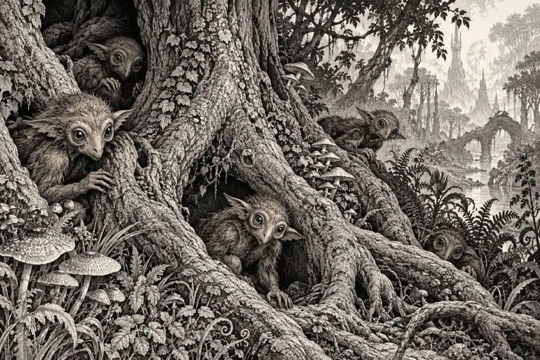
ズーグ
魔法の森にすむ小さな種族
夢の国の「魔法の森」の木々に暮らす、小さくて好奇心旺盛な種族。噂話と探検が大好きで、森の秘密をだれよりも知っています。
⚠️ このキャラの弱点：好奇心が強すぎて、首をつっこまなくていいことにまで手を出しがち。
📍 ゆかりの地：プロビデンス（アメリカ・ロードアイランド州）
Wikipediaで詳しく ↗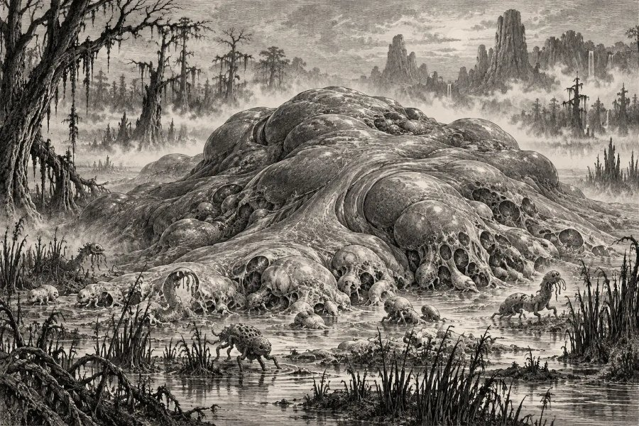
ウボ＝サスラ
すべての命の源
地球がまだ若いころ、あらゆる生命を生み出したといわれる原初の存在。あなたも、ものごとの「始まり」をつくる力を秘めています。
⚠️ このキャラの弱点：自分から動くのはおっくうで、周りが動くのをじっと待ってしまうことも。
📍 ゆかりの地：プロビデンス（アメリカ・ロードアイランド州）
Wikipediaで詳しく ↗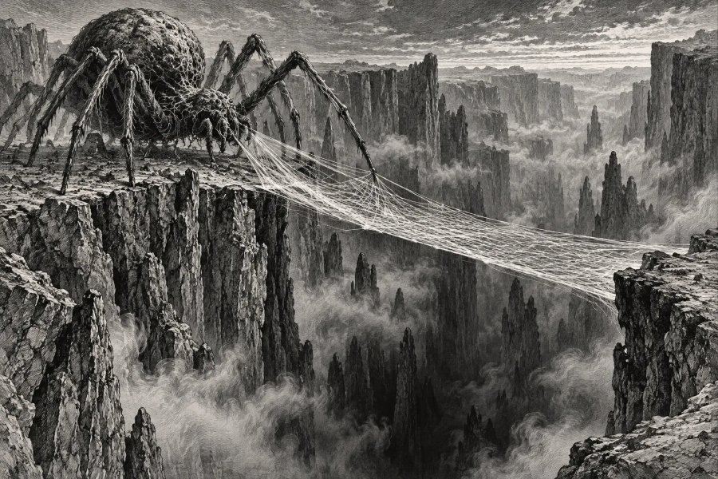
アトラク＝ナクア
深淵に橋をかける蜘蛛の神
底なしの谷に、果てしなく糸の橋をかけ続ける蜘蛛の神。こつこつと網の目のように人脈や計画を広げていく、粘り強い人です。
⚠️ このキャラの弱点：邪魔をされるのが大きらいで、作業中に話しかけられると不機嫌に。
📍 ゆかりの地：プロビデンス（アメリカ・ロードアイランド州）
Wikipediaで詳しく ↗🔥 火属性のクトゥルフ神話の存在

ニャルラトホテプ
千の顔を持つ這い寄る混沌
さまざまな姿で人の前に現れ、巧みな話術で人々を魅了する神。場を一瞬で自分のペースに巻き込む、圧倒的なカリスマの持ち主です。
⚠️ このキャラの弱点：人をからかうのが好きすぎて、本気か冗談かわからないと言われがち。
📍 ゆかりの地：プロビデンス（アメリカ・ロードアイランド州）
Wikipediaで詳しく ↗
アザトース
宇宙の中心で沸き立つ混沌
宇宙の中心で、笛と太鼓の音に包まれて渦巻く万物の王。あなたがいるだけで、周りに大きなエネルギーと変化が生まれます。
⚠️ このキャラの弱点：勢いまかせで、自分が何を引き起こしたか気づいていないことも。
📍 ゆかりの地：プロビデンス（アメリカ・ロードアイランド州）
Wikipediaで詳しく ↗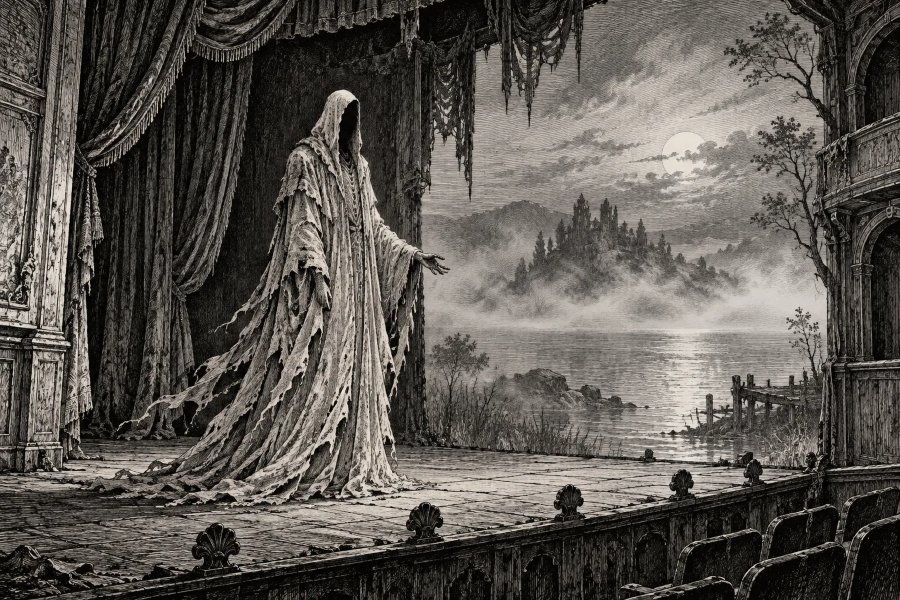
ハスター
名状しがたき黄衣の王
読んだ者の心をとらえる戯曲『黄衣の王』にまつわる、謎めいた存在。芸術や表現で人の心を強く揺さぶる、独特の美意識を持っています。
⚠️ このキャラの弱点：こだわりが強すぎて、自分の世界に人を巻き込みすぎることも。
📍 ゆかりの地：プロビデンス（アメリカ・ロードアイランド州）
Wikipediaで詳しく ↗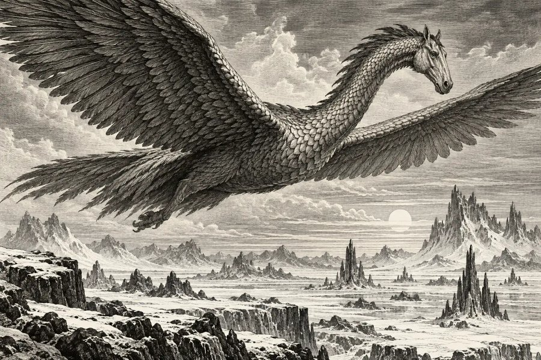
シャンタク鳥
夢の国の空を飛ぶ巨鳥
馬のような頭を持ち、夢の国の寒い荒野の空を渡る巨大な鳥。思い立ったらどこまでも飛んでいける、行動力のかたまりです。
⚠️ このキャラの弱点：苦手なもの（夜鬼）の前では、とたんに逃げ腰になってしまいます。
📍 ゆかりの地：プロビデンス（アメリカ・ロードアイランド州）
Wikipediaで詳しく ↗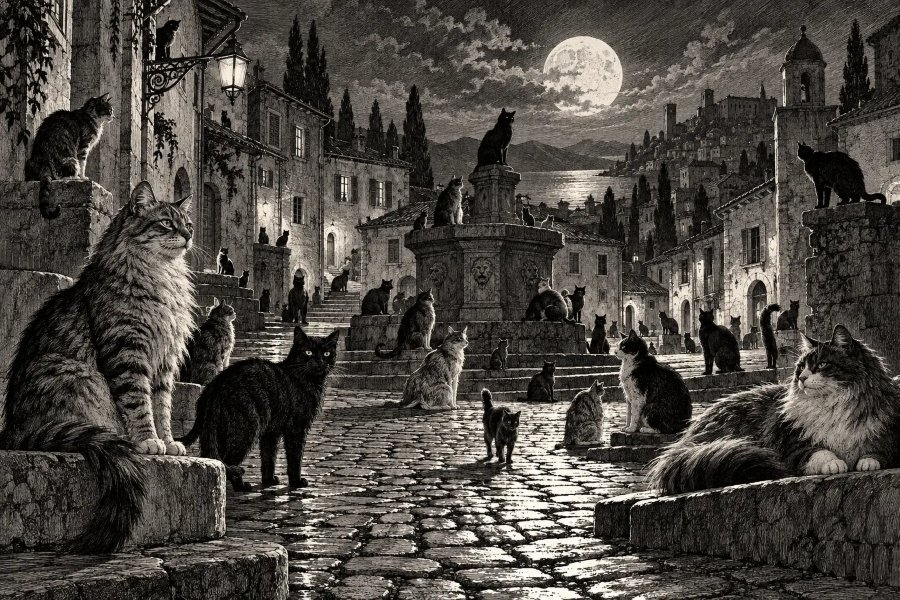
ウルタールの猫
猫を守る町の猫たち
「猫を殺してはならない」という掟で知られる町ウルタールの猫たち。自由気ままに見えて、仲間の危機には一致団結する熱い心の持ち主です。
⚠️ このキャラの弱点：気分屋で、かまってほしいときとほしくないときの差が激しめ。
📍 ゆかりの地：プロビデンス（アメリカ・ロードアイランド州）
Wikipediaで詳しく ↗⛰️ 土属性のクトゥルフ神話の存在

ツァトゥグァ
地底でまどろむヒキガエルの神
地底の暗闇ン・カイで、いつも眠そうにしているヒキガエルのような神。どんな状況でもあわてない、どっしりした余裕が魅力です。
⚠️ このキャラの弱点：めんどくさがりで、お供え（ごほうび）がないと動かないことも。
📍 ゆかりの地：プロビデンス（アメリカ・ロードアイランド州）
Wikipediaで詳しく ↗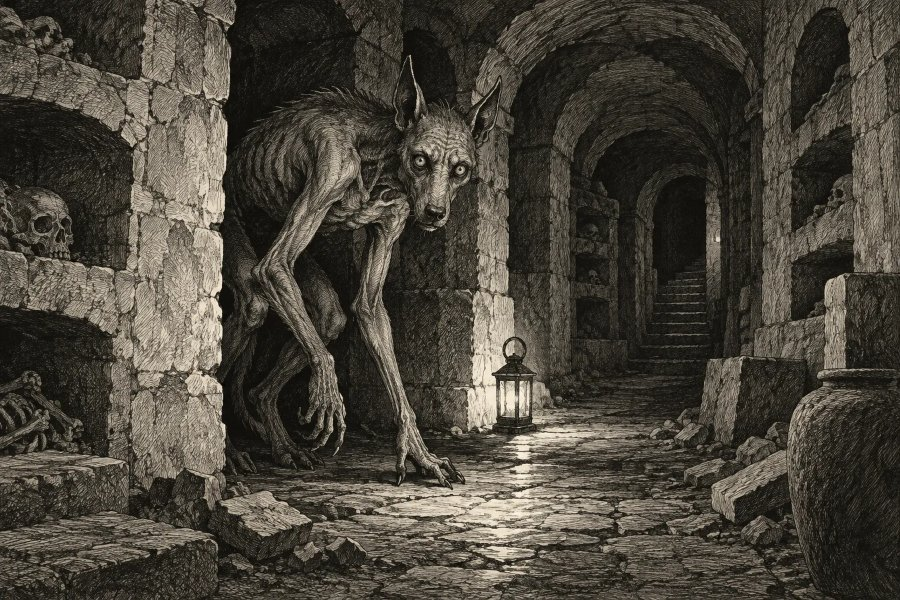
グール
地下に暮らす食屍鬼
地下のトンネルに住み、夢の国では意外と話のわかる仲間にもなる種族。見た目で誤解されても、付き合えば頼もしい人です。
⚠️ このキャラの弱点：食べることになると、周りが見えなくなるほど夢中に。
📍 ゆかりの地：プロビデンス（アメリカ・ロードアイランド州）
Wikipediaで詳しく ↗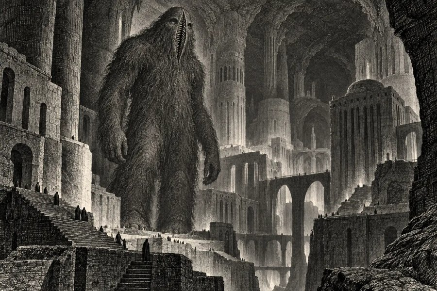
ガグ
地底の国の巨人
夢の国の地底に暮らす、縦に裂けた口を持つ大きな巨人。圧倒的なパワーと存在感で、周りに安心感を与えるタイプです。
⚠️ このキャラの弱点：体も態度も大きくて、知らないうちに人を怖がらせていることも。
📍 ゆかりの地：プロビデンス（アメリカ・ロードアイランド州）
Wikipediaで詳しく ↗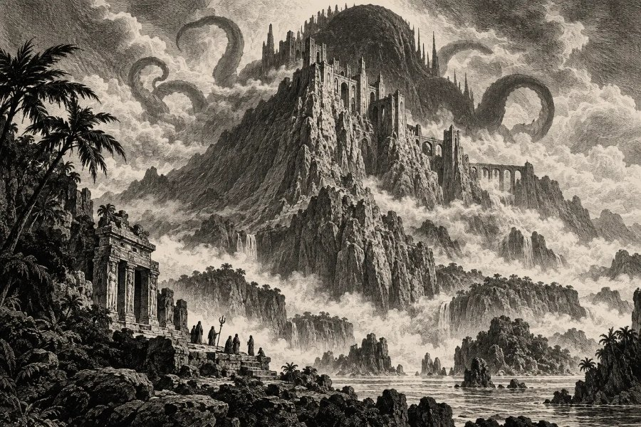
ガタノトーア
山の地下に潜む石化の神
幻のムー大陸の山の地下に潜み、その姿を見た者を石に変えるという神。存在感だけで場を固まらせる、すごみのある人です。
⚠️ このキャラの弱点：近寄りがたい雰囲気で、本当はやさしくても誤解されがち。
📍 ゆかりの地：プロビデンス（アメリカ・ロードアイランド州）
Wikipediaで詳しく ↗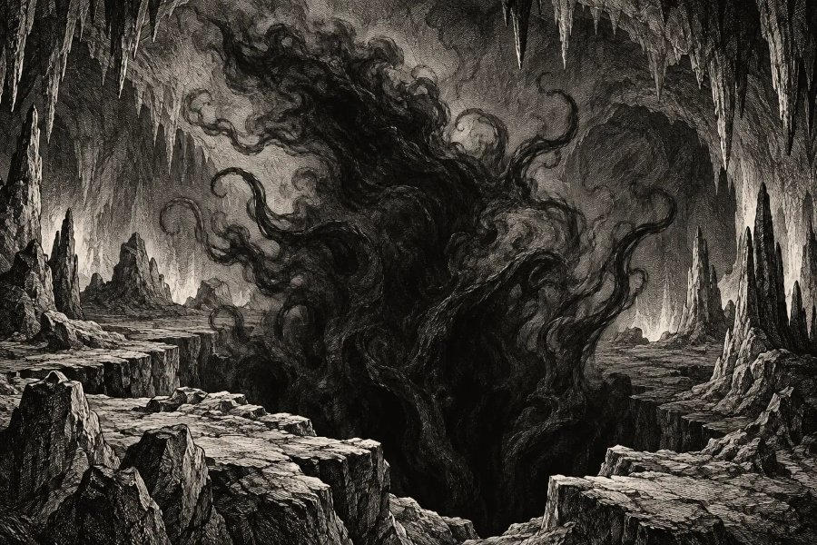
ニョグタ
地の底の暗い洞窟にひそむもの
地球の奥深くの洞窟にひそみ、黒い霧のように姿を変える存在。表には出なくても、深いところで物事を動かす実力者です。
⚠️ このキャラの弱点：なかなか表に出てこないので、何を考えているか謎に思われがち。
📍 ゆかりの地：プロビデンス（アメリカ・ロードアイランド州）
Wikipediaで詳しく ↗⚔️ 金属性のクトゥルフ神話の存在

ヨグ＝ソトース
門にして鍵
すべての時間と空間につながる「門」であり、その「鍵」でもある神。物事の仕組みを見抜き、答えへの扉を開く鋭い知性があります。
⚠️ このキャラの弱点：全部わかった気になって、人の話を最後まで聞かないことも。
📍 ゆかりの地：プロビデンス（アメリカ・ロードアイランド州）
Wikipediaで詳しく ↗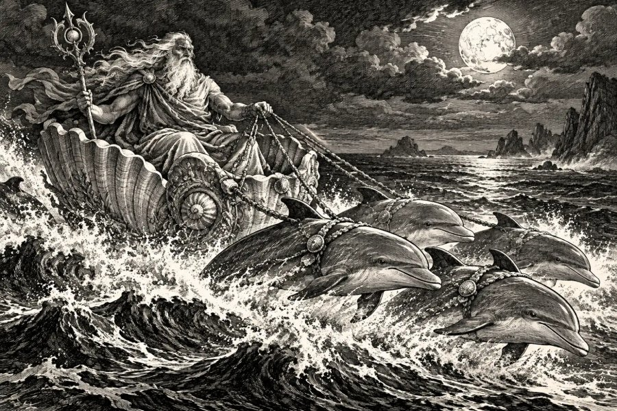
ノーデンス
大いなる深淵の主
白銀の髪をなびかせ、貝殻の戦車で深淵を駆ける古き神。困っている人をさりげなく助ける、気高く公平な人です。
⚠️ このキャラの弱点：理想が高く、いいかげんなことには厳しくなりすぎることも。
📍 ゆかりの地：プロビデンス（アメリカ・ロードアイランド州）
Wikipediaで詳しく ↗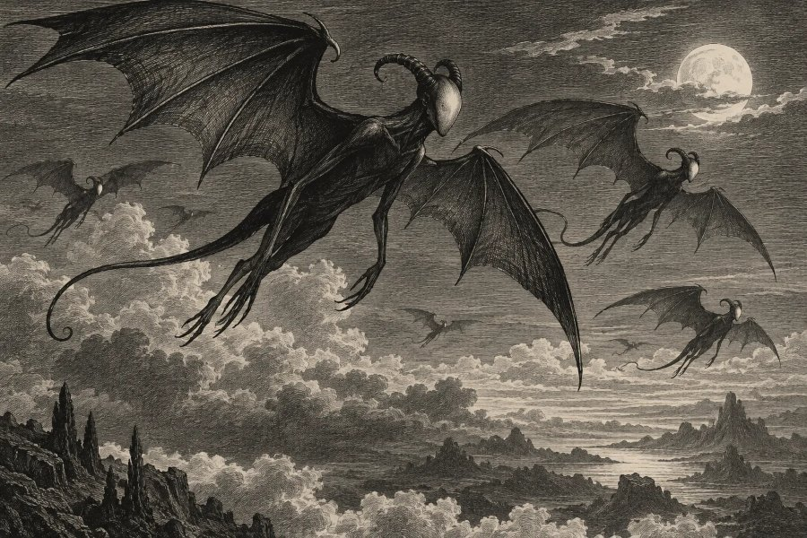
ナイトゴーント
夜鬼・顔のない夜の番人
顔がなく、声も立てずに夜空を飛ぶ番人。言葉は少なくても、決めた役目を黙々と果たす、信頼できる人です。
⚠️ このキャラの弱点：表情が読めず、何を考えているかわからないと言われがち。
📍 ゆかりの地：プロビデンス（アメリカ・ロードアイランド州）
Wikipediaで詳しく ↗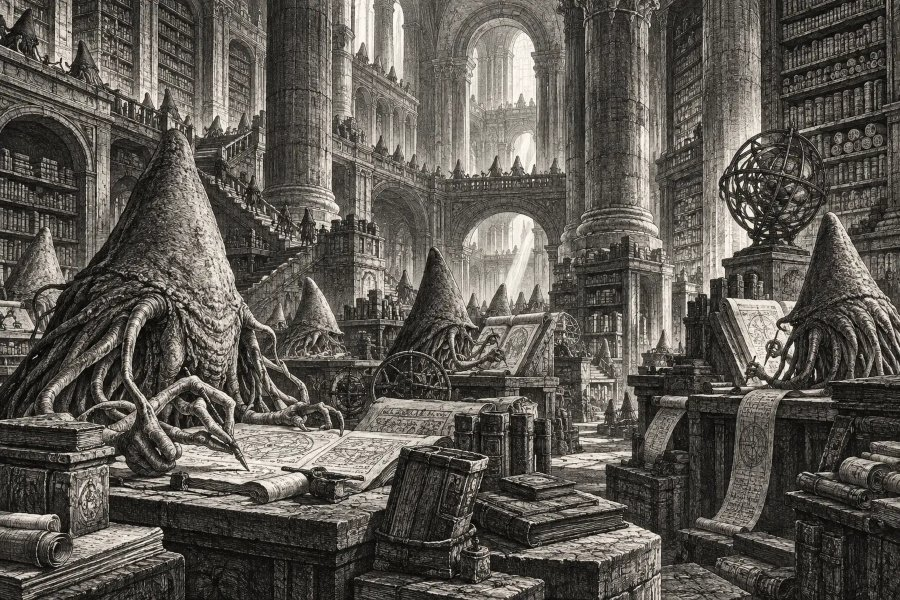
イースの大いなる種族
時を超える記録者
時間を超えて過去や未来の知識を集め、巨大な図書館に記録してきた種族。知識を整理し、未来を見通す力に優れています。
⚠️ このキャラの弱点：知りたい気持ちが強すぎて、人のことまで調べすぎてしまうことも。
📍 ゆかりの地：プロビデンス（アメリカ・ロードアイランド州）
Wikipediaで詳しく ↗
ミ＝ゴ
ユゴスからの訪問者
冥王星ユゴスから鉱物を求めて地球へやってくる、高度な技術を持つ種族。手先が器用で、最新技術や仕組みづくりにめっぽう強いタイプです。
⚠️ このキャラの弱点：効率を重視しすぎて、人の気持ちを置き去りにしがち。
📍 ゆかりの地：プロビデンス（アメリカ・ロードアイランド州）
Wikipediaで詳しく ↗🌊 水属性のクトゥルフ神話の存在

クトゥルフ
ルルイエに眠る大いなる神
海の底の都ルルイエで眠りながら、夢を通じて人々に語りかける神。そこにいるだけで周りに影響を与える、スケールの大きな人です。
⚠️ このキャラの弱点：寝ているあいだ（オフの日）は、何があっても起きません。
📍 ゆかりの地：プロビデンス（アメリカ・ロードアイランド州）
Wikipediaで詳しく ↗
ダゴン
深きものを統べる父なる神
深きものたちを率いる、海の底の巨大な父神。大勢の仲間を束ね、ゆったり見守るリーダーの器があります。
⚠️ このキャラの弱点：身内には甘く、外の人にはなかなか心を開かないことも。
📍 ゆかりの地：プロビデンス（アメリカ・ロードアイランド州）
Wikipediaで詳しく ↗
深きもの
海の底に暮らす種族
海の底に都を築き、陸の人間とも関わりを持ってきた種族。どんな環境にもなじみ、仲間とのつながりを何より大切にします。
⚠️ このキャラの弱点：地元や仲間が恋しくなり、ふと海（ふるさと）に帰りたくなりがち。
📍 ゆかりの地：プロビデンス（アメリカ・ロードアイランド州）
Wikipediaで詳しく ↗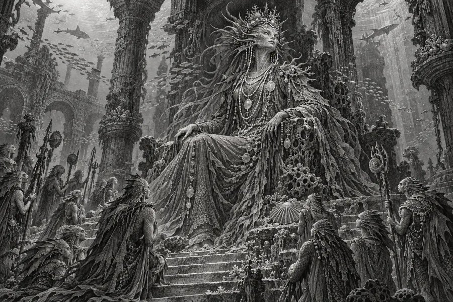
ハイドラ
深きものを統べる母なる神
ダゴンと並んで深きものたちを統べる、海の底の母神。大きな包容力で、仲間を静かに守り育てる人です。
⚠️ このキャラの弱点：守りたい気持ちが強すぎて、心配性になってしまうことも。
📍 ゆかりの地：プロビデンス（アメリカ・ロードアイランド州）
Wikipediaで詳しく ↗
ショゴス
形を自在に変える不定形の生物
どんな形にもなれる、ねばねばした万能の生物。水のように柔軟で、どんな仕事も器用にこなせる適応力の持ち主です。
⚠️ このキャラの弱点：頼まれると断れず、気づけば何でも屋になってしまいがち。
📍 ゆかりの地：プロビデンス（アメリカ・ロードアイランド州）
Wikipediaで詳しく ↗